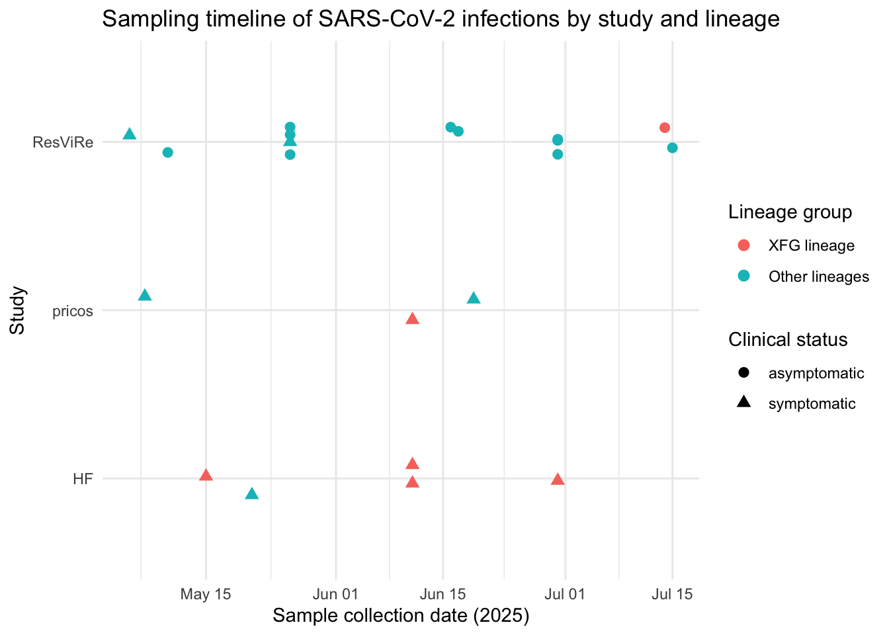
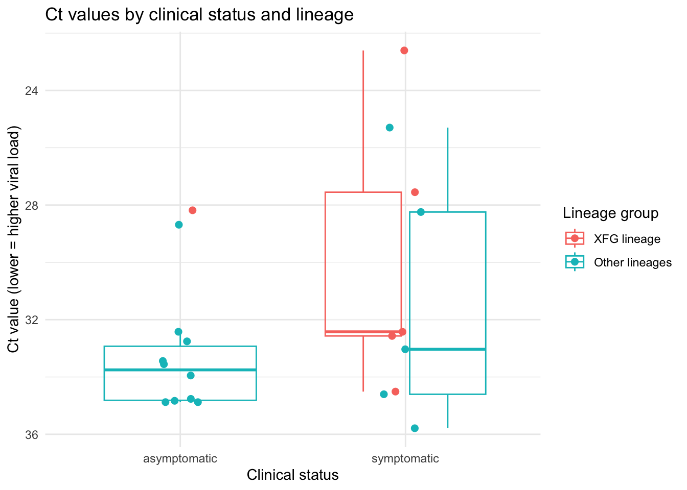

Low Transmission of the SARS-CoV-2 XFG Variant in Coastal Kenya
Author
Ziquan ‘Harrison’ Liu
Code
# requried packages:# Load required packageslibrary(tidyverse) # data manipulation (dplyr, tidyr) and visualization (ggplot2)library(lubridate) # convenient tools for working with dateslibrary(janitor) # clean variable names and simple tabulationslibrary(arsenal) # tableby(): create publication-style descriptive tableslibrary(kableExtra) # additional styling for HTML tableslibrary(plotly) # turn ggplot figures into interactive graphicslibrary(broom) # convert model objects into tidy data frames
Code
# Load and prepare analysis dataset# This chunk reads the raw CSV file, cleans variable names,and creates derived variables used throughout the report.# 1. Read the raw CSV file from the local "data" folder.Data_xfg_raw <- readr::read_csv(file ="/Users/ldh/Library/Mobile Documents/com~apple~CloudDocs/USC PhD/STUDY DOCUMENTS/Fall 2025/PM 566/Final Project/PM 566 Final Project/PM-566-Final-Project/data/Data1_xfg.csv"# relative path to the dataset)# 2. Standardize variable names to lower_snake_casData_xfg <- Data_xfg_raw %>%janitor::clean_names()# 3. Convert the sample collection date from character (day/month/year) to Date class.Data_xfg <- Data_xfg %>%mutate(date_collect = lubridate::dmy(date_collect) # dmy() = day-month-year)# 4. Create a simplified lineage variable with two levels: "XFG lineage" vs "Other lineages".Data_xfg <- Data_xfg %>%mutate(# nextclade_pango2 是原始的 lineage 变量lineage_group =if_else(stringr::str_starts(nextclade_pango2, "XFG"), # check if lineage begins with "XFG""XFG lineage", # label as XFG if TRUE"Other lineages"# label as other lineages otherwise),lineage_group =factor(lineage_group,levels =c("XFG lineage", "Other lineages") # set factor level order))# 5. Encode clinical_status as an ordered factor: asymptomatic (reference) followed by symptomatic.Data_xfg <- Data_xfg %>%mutate(clinical_status =factor(clinical_status,levels =c("asymptomatic", "symptomatic")))# 6. Encode study as a factor with levels ordered to match the original paper.Data_xfg <- Data_xfg %>%mutate(study =factor(study,levels =c("HF", "pricos", "ResViRe") # order studies HF → pricos → ResViRe))
1. Introduction
The recombinant SARS-CoV-2 lineage XFG emerged as a worldwide predominant variation in 2025. Nonetheless, global supremacy does not inherently suggest homogeneous local dissemination. Comprehending the circulation of XFG in various contexts is crucial for assessing its public health implications and for devising genetic surveillance measures.This project examines publicly accessible replication data from Lambisia et al. (2025), who studied XFG transmission in coastal Kenya. The dataset comprises 21 RT-PCR-confirmed SARS-CoV-2 cases collected from May to July 2025 across three surveillance platforms: a hospital-based cohort (HF), a primary-care respiratory infection cohort (pricos), and a community-based surveillance project (ResViRe). The data for each participant encompass fundamental demographics, RT-PCR cycle threshold (Ct) values, viral lineage classifications, and self-reported symptoms. Our objective is to delineate patterns in Ct values, symptoms, and viral lineages among study groups, as well as to illustrate the frequency of XFG detection.
2. Mothods
2.1 Data and Study Population:
The replication dataset was obtained from the Harvard Dataverse repository (DOI: 10.7910/DVN/LJEYL6). The study comprises 21 people with proven SARS-CoV-2 infection from three surveillance studies undertaken in coastal Kenya: HF, pricos, and ResViRe. Each participant had access to the following essential variables: Study identifier (study: HF, pricos, ResViRe) Demographics: sex, age in years, age group Virologic measures: RT-PCR Ct value (ct_value) and sampling date (date_collect) Genomic lineage designation (nextclade_pango2) Clinical status (clinical_status: asymptomatic vs symptomatic) Symptom indicators (sys_cough, sys_headache, sys_runny_nose, sys_sore_throat, sys_chestpain, sys_fever) Only the 21 observations contained in the replication dataset were examined. ## 2.2 Statistical analysis
Code
# Descriptive baseline table (Table 1)# This chunk creates a publication-style descriptive table of participant characteristics stratified by study, using arsenal::tableby() and kableExtra.# 1. Specify the set of variables to include in Table 1.vars_for_table1 <-c("sex", "age_years", "age_group", "ct_value","nextclade_pango2", "clinical_status","sys_cough", "sys_headache", "sys_runny_nose","sys_sore_throat", "sys_chestpain", "sys_fever")# 2. Use tableby() to compute descriptive statistics by study.tab1 <- arsenal::tableby(formula =as.formula(paste("study ~", paste(vars_for_table1, collapse =" + "))),data = Data_xfg, # analysis datasetcontrol =tableby.control(numeric.stats =c("medianq1q3", "N"), # show median (IQR) and N for numeric varsstats.labels =list(medianq1q3 ="Median (IQR)")))# 3. Convert tableby output to an HTML table using kableExtra.tab1_kable <-summary(tab1, text =FALSE) %>%# return as data.frame rather than plain textas.data.frame() %>%kbl(format ="html", # output HTML tablecaption ="Table 1. Participant characteristics by study.",escape =FALSE, # allow HTML formatting in labelsbooktabs =TRUE) %>%kableExtra::kable_styling(full_width =FALSE, # do not stretch table to full page widthbootstrap_options =c("striped", "hover", "condensed")) %>%kableExtra::scroll_box(height ="500px"# allow vertical scrolling if table is long)tab1_kable # print Table 1 to the report
Table 1. Participant characteristics by study.
HF (N=5)
pricos (N=3)
ResViRe (N=13)
Total (N=21)
p value
**sex**
0.554
Female
2 (40.0%)
1 (33.3%)
8 (61.5%)
11 (52.4%)
Male
3 (60.0%)
2 (66.7%)
5 (38.5%)
10 (47.6%)
**age_years**
0.105
Median (IQR)
18.000 (10.000, 19.000)
34.000 (27.000, 57.000)
13.300 (8.300, 21.800)
18.000 (10.000, 21.800)
N
5
3
13
21
**age_group**
0.309
0-13
2 (40.0%)
0 (0.0%)
6 (46.2%)
8 (38.1%)
13-19
1 (20.0%)
0 (0.0%)
3 (23.1%)
4 (19.0%)
19+
2 (40.0%)
3 (100.0%)
4 (30.8%)
9 (42.9%)
**ct_value**
0.109
Median (IQR)
32.424 (27.552, 34.510)
28.243 (26.770, 30.405)
33.554 (32.756, 34.764)
33.033 (28.687, 34.603)
N
5
3
13
21
**nextclade_pango2**
0.014
Not sequenced
1 (20.0%)
2 (66.7%)
12 (92.3%)
15 (71.4%)
XFG.12
2 (40.0%)
0 (0.0%)
0 (0.0%)
2 (9.5%)
XFG.21
1 (20.0%)
0 (0.0%)
0 (0.0%)
1 (4.8%)
XFG.4.1
1 (20.0%)
0 (0.0%)
1 (7.7%)
2 (9.5%)
XFG.7
0 (0.0%)
1 (33.3%)
0 (0.0%)
1 (4.8%)
**clinical_status**
asymptomatic
0 (0.0%)
0 (0.0%)
11 (84.6%)
11 (52.4%)
symptomatic
5 (100.0%)
3 (100.0%)
2 (15.4%)
10 (47.6%)
**sys_cough**
No
0 (0.0%)
0 (0.0%)
12 (92.3%)
12 (57.1%)
Yes
5 (100.0%)
3 (100.0%)
1 (7.7%)
9 (42.9%)
**sys_headache**
No
4 (80.0%)
0 (0.0%)
13 (100.0%)
17 (81.0%)
Yes
1 (20.0%)
3 (100.0%)
0 (0.0%)
4 (19.0%)
**sys_runny_nose**
No
0 (0.0%)
0 (0.0%)
11 (84.6%)
11 (52.4%)
Yes
5 (100.0%)
3 (100.0%)
2 (15.4%)
10 (47.6%)
**sys_sore_throat**
No
1 (20.0%)
0 (0.0%)
13 (100.0%)
14 (66.7%)
Yes
4 (80.0%)
3 (100.0%)
0 (0.0%)
7 (33.3%)
**sys_chestpain**
0.001
No
5 (100.0%)
1 (33.3%)
13 (100.0%)
19 (90.5%)
Yes
0 (0.0%)
2 (66.7%)
0 (0.0%)
2 (9.5%)
**sys_fever**
No
0 (0.0%)
1 (33.3%)
13 (100.0%)
14 (66.7%)
Yes
5 (100.0%)
2 (66.7%)
0 (0.0%)
7 (33.3%)
Code
# Expected result: an HTML table summarizing demographics, Ct values, lineage, clinical status, and symptoms by study (HF, pricos, ResViRe).
2.3 Visualisation strategy
The primary visual representations were generated with ggplot2 for static graphics and plotly. The specific outputs referring to results section.
3. Results
3.1 Lineage distribution across studies (Interactive)
Code
# Interactive bar chart: lineage distribution by study# This chunk calculates the distribution of XFG relative to other lineages within each research and presents it as an interactive stacked bar chart.# 1. Compute counts and proportions of each lineage_group within each study.# Interactive bar chart: lineage distribution by study# This chunk computes the distribution of XFG vs other lineages within each study and displays it as an interactive stacked bar chart.# 1. Compute counts and proportions of each lineage_group within each study.lineage_summary <- Data_xfg %>%count(study, lineage_group) %>%# count observations by study and lineage_groupgroup_by(study) %>%# group by studymutate(prop = n /sum(n) *100# compute percentage within each study) %>%ungroup()# 2. Create a stacked bar chart with one bar per study, colored by lineage_group.p_lineage <-ggplot(lineage_summary,aes(x = study, # x-axis: study (HF, pricos, ResViRe)y = prop, # y-axis: proportion (%)fill = lineage_group, # fill color: lineage group (XFG vs Other)text =paste0( # tooltip text for interactivity"Study: ", study, "<br>","Lineage: ", lineage_group, "<br>","N: ", n, "<br>","Proportion: ", round(prop, 1), "%"))) +geom_col(position ="stack") +# stacked columns to show compositionscale_y_continuous(labels = scales::percent_format(scale =1) # format y-axis as percentages) +labs(title ="Distribution of XFG and other lineages by study",x ="Study",y ="Proportion of samples (%)",fill ="Lineage group") +theme_minimal()# 3. Convert the ggplot object into an interactive plotly graphic.plotly::ggplotly(p_lineage, tooltip ="text")
Code
# Expected result: an interactive stacked bar chart showing, for each study, the percentage of samples belonging to the XFG lineage versus other lineages, with tooltips revealing exact counts and percentages.
XFG represented a minority of sequences across all three surveillance investigations in this limited sample. The stacked bars indicate that the majority of sequenced samples were categorized as other lineages, aligning with the restricted local transmission of XFG during the study period.
3.2 Sampling timeline
Code
# This chunk visualizes when samples were collected over time,stratified by study and lineage group. Each point is one participant.timeline_data <- Data_xfg %>%# start from the cleaned analysis dataset dplyr::filter(!is.na(date_collect)) # keep only observations with a valid collection dateggplot( timeline_data,aes(x = date_collect, # x-axis: sample collection datey = study, # y-axis: study (HF, pricos, ResViRe)color = lineage_group, # color: XFG vs Other lineagesshape = clinical_status # shape: symptomatic vs asymptomatic )) +geom_jitter(width =0, # no horizontal jitter (date is exact)height =0.1, # slight vertical jitter to avoid overplottingsize =2.5# point size ) +scale_x_date(date_labels ="%b %d") +# show month + day on the x-axislabs(title ="Sampling timeline of SARS-CoV-2 infections by study and lineage",x ="Sample collection date (2025)",y ="Study",color ="Lineage group",shape ="Clinical status" ) +theme_minimal()

Code
# Expected result: A dot plot over time showing when each sample was collected in each study, with colors distinguishing XFG vs other lineages and shapes showing symptoms.
The sampling period indicated that the 21 illnesses were gathered over a limited timeframe from May to July 2025. XFG infections manifest as discrete occurrences across this timeframe, rather than exhibiting concentrated temporal clusters. This visual pattern aligns with minimal local transmission of XFG in this context. Nonetheless, the exceedingly tiny sample number constrains any definitive conclusions.
3.3 Ct values by clinical status and lineage
Code
# Ct value distribution by clinical status and lineage# This chunk plots Ct values by clinical status (asymptomatic vs symptomatic), with color indicating lineage_group (XFG vs Other).## Boxplots are only drawn for groups with at least 2 observations to avoid misleading "boxplots" representing a single data point.# 1. Filter out rows with missing Ct values and compute group-specific sample sizes.ct_data <- Data_xfg %>%dplyr::filter(!is.na(ct_value)) %>%# keep only observations with Ct valuesdplyr::group_by(clinical_status, lineage_group) %>%# group by clinical status and lineagedplyr::mutate(n_in_group = dplyr::n() # number of observations in each group) %>%dplyr::ungroup() # remove grouping for plotting# 2. Create a combined boxplot + jitter plot.p_ct <-ggplot(ct_data,aes(x = clinical_status, # x-axis: asymptomatic vs symptomaticy = ct_value, # y-axis: Ct valuecolor = lineage_group # color: lineage group)) +geom_boxplot(data = ct_data %>% dplyr::filter(n_in_group >=2), # draw boxplot only if n >= 2alpha =0.4, # slightly transparent boxesoutlier.shape =NA# hide default outlier points) +geom_jitter(width =0.1, # small horizontal jitter for pointssize =2# point size) +scale_y_reverse() +# invert y-axis: lower Ct (higher viral load) at toplabs(title ="Ct values by clinical status and lineage",x ="Clinical status",y ="Ct value (lower = higher viral load)",color ="Lineage group") +theme_minimal()p_ct # print the figure

Code
# Expected result: a plot showing individual Ct values for each combination of clinical status and lineage group, with boxplots shown only where n >= 2.
In general, Ct levels seem to be largely comparable between symptomatic and asymptomatic infections, as well as between XFG and non-XFG lineages. There is some indication that symptomatic infections may exhibit somewhat lower Ct values (indicating higher viral load); however, the sample size within each subgroup is exceedingly limited, thus these trends should be regarded as merely descriptive.
3.4 Simple regression: association between Ct and symptoms
Code
# Create binary outcome: symptomatic vs asymptomatic## We first create a simple 0/1 variable for symptoms.## 1 = symptomatic, 0 = asymptomatic.## This avoids having a long expression like (clinical_status == "symptomatic") inside the model formula, which previously created ugly term names and broke the labeling code.Data_xfg <- Data_xfg %>%# start from main analysis dataset dplyr::mutate(symptomatic = dplyr::if_else( # create new binary outcome clinical_status =="symptomatic", # condition: symptomatic vs asymptomatic1L, # code 1 for symptomatic0L, # code 0 for asymptomaticmissing =NA_integer_# keep NA as NA (if any) ) )# Fit simple logistic regression model# Outcome: symptomatic (1/0)# Predictors: Ct value (continuous), lineage group, age in years.# This is purely exploratory and *not* the main focus of the project.# The main project goal remains descriptive, but this model can be a bonus.symp_model <-glm( symptomatic ~ ct_value + lineage_group + age_years, # model formuladata = Data_xfg %>% dplyr::filter( # keep only complete cases!is.na(symptomatic),!is.na(ct_value),!is.na(age_years),!is.na(lineage_group) ),family =binomial() # logistic regression)# Tidy model output and make a clean, readable table# We exponentiate the coefficients to get odds ratios (OR),# and then add 95% confidence intervals and p-values.symp_results <- broom::tidy( symp_model,conf.int =TRUE, # add confidence intervalsexponentiate =TRUE# report OR instead of log-odds) %>% dplyr::mutate(# Relabel the term column to something human-readable.# Note: we now have clean term names: "(Intercept)", "ct_value",# "lineage_groupOther lineages", "age_years".term = dplyr::case_when( term =="(Intercept)"~"Intercept (baseline: XFG lineage, younger age)", term =="ct_value"~"Ct value (per 1 unit higher)", term =="lineage_groupOther lineages"~"Other vs XFG lineages", term =="age_years"~"Age (per 1 year older)",TRUE~ term # default: keep original ),# Round numbers for a clean tableestimate =round(estimate, 2), # odds ratioconf.low =round(conf.low, 2), # lower 95% CIconf.high =round(conf.high, 2), # upper 95% CIp.value =signif(p.value, 2) # p-value with 2 sig digits ) %>% dplyr::select(Term = term, # rename columns for display`Odds ratio`= estimate,`95% CI (lower)`= conf.low,`95% CI (upper)`= conf.high,`p-value`= p.value )# Print the table in a stable, low-bug way# Here we use knitr::kable instead of gt. kable is simpler and tends to fail less# on Quarto/GitHub Pages. If you later want a fancier style, you can wrap# kableExtra::kable_styling around it.knitr::kable( symp_results,caption ="Association between Ct value, viral lineage and symptomatic infection (logistic regression)")
Association between Ct value, viral lineage and symptomatic infection (logistic regression)
Term
Odds ratio
95% CI (lower)
95% CI (upper)
p-value
Intercept (baseline: XFG lineage, younger age)
1103.98
0.00
4.685247e+10
0.34
Ct value (per 1 unit higher)
0.84
0.51
1.250000e+00
0.43
Other vs XFG lineages
0.15
0.01
1.530000e+00
0.14
Age (per 1 year older)
0.99
0.93
1.050000e+00
0.77
Code
# Expected result: a compact table of odds ratios with 95% CIs.
This exploratory model revealed that the direction of relationships aligns with biological expectations: elevated Ct values (signifying reduced viral load) were generally linked to diminished probabilities of exhibiting symptoms, but age and lineage group exhibited no discernible trend. Nevertheless, confidence intervals were broad and frequently encompass the null, indicating the restricted knowledge derived from merely 21 observations.
3.5 Symptom profiles across studies
Code
# This code chunk creates a descriptive bar plot showing, for each participating study (HF, pricos, ResViRe), the proportion of participants reporting each symptom# (cough, headache, runny nose, sore throat, chest pain, fever).# It is purely descriptive and helps compare symptom patterns across studies for a general audience.# 1. Reshape symptom variables into a long formatsymptom_long <- Data_xfg %>%# start from main dataset dplyr::select( # keep only study + symptom variables study, sys_cough, sys_headache, sys_runny_nose, sys_sore_throat, sys_chestpain, sys_fever ) %>% tidyr::pivot_longer( # convert wide symptom columns to long formatcols =starts_with("sys_"), # all variables whose names start with "sys_"names_to ="symptom", # new column that stores symptom namevalues_to ="symptom_present"# new column that stores Yes/No response ) %>% dplyr::mutate(# Give each symptom a short, readable label for plottingsymptom = dplyr::recode( symptom,"sys_cough"="Cough","sys_headache"="Headache","sys_runny_nose"="Runny nose","sys_sore_throat"="Sore throat","sys_chestpain"="Chest pain","sys_fever"="Fever" ),# Recode Yes/No into 1/0 so we can compute proportions easilysymptom_present = dplyr::if_else( symptom_present =="Yes", # if the original value is "Yes"1L, # code as 1 (symptom present) dplyr::if_else( symptom_present =="No", # if the original value is "No"0L, # code as 0 (symptom absent)NA_integer_# otherwise keep as missing ) ) )# 2. Calculate the proportion with each symptom within each studysymptom_summary <- symptom_long %>% dplyr::filter(!is.na(symptom_present)) %>%# drop rows with missing Yes/No dplyr::group_by(study, symptom) %>%# group by study and symptom type dplyr::summarise(n = dplyr::n(), # total number of participants in this groupn_symptom =sum(symptom_present), # count with symptom present (value == 1)prop_symptom = n_symptom / n # proportion with the symptom ) %>% dplyr::ungroup() # remove grouping to avoid side effects later# 3. Make a faceted bar plot of symptom proportions by studyp_symptom_study <-ggplot( symptom_summary, # use summary data frame for plottingaes(x = study, # x-axis: study (HF, pricos, ResViRe)y = prop_symptom # y-axis: proportion with the symptom )) +geom_col( # draw solid bars (columns)fill ="#1B9E77", # choose a single calm color for all barsalpha =0.8# slightly transparent for a softer look ) +scale_y_continuous( # format y-axis as percentageslabels = scales::percent_format(accuracy =1) # show values like 40% ) +labs(title ="Symptom profiles across participating studies", # main titlex ="Study", # x-axis labely ="Participants with symptom", # y-axis labelcaption ="Each bar shows the proportion of participants within each study reporting the symptom.\nSample sizes are small, so percentages should be interpreted with caution." ) +facet_wrap(~ symptom, nrow =2) +# create small panels for each symptomtheme_minimal() +# clean, minimal themetheme(plot.title =element_text(face ="bold", size =14), # emphasize plot titlestrip.text =element_text(face ="bold"), # bold facet labels (symptom names)axis.text.x =element_text(angle =0, hjust =0.5) # keep study labels horizontal for readability )p_symptom_study # print the plot to the report
Code
# The anticipated outcome is a grid of bar charts, each representing a symptom and comparing the proportion of participants exhibiting that symptom throughout the three investigations.
Among the three surveillance platforms, cough, headache, and fever were often reported by the limited number of participants, although chest pain was infrequently observed. Patterns vary among investigations; for instance, respiratory symptoms are more prevalent in the pricos and ResViRe trials compared to HF. However, these discrepancies are derived from limited sample sizes and should be understood intuitively rather than numerically.
4. Conclusion and Summary
This descriptive analysis of 21 SARS-CoV-2 positive samples from coastal Kenya indicated that the XFG recombinant lineage represented a modest proportion of infections across surveillance studies. It implied restricted local transmission throughout the research period. Ct values and symptom profiles exhibited considerable similarity between XFG and non-XFG lineages, as well as between symptomatic and asymptomatic infections, with only weak and highly ambiguous patterns observed in a limited exploratory regression model. Due to the limited sample size, all conclusions should be regarded as illustrative rather than conclusive. This project primarily illustrated the process of importing, cleaning, summarizing, and visualizing a publically available replication dataset with reproducible R and Quarto routines. Subsequent research with larger datasets may implement analogous workflows while integrating more stringent modeling, adjustments for possible confounding factors, and formal uncertainty quantification.